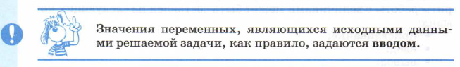
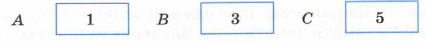
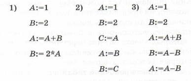

Значок «:=» читается «присвоить». Например:
Z:=X+Y
Компьютер сначала вычисляет выражение, затем результат присваивает переменной, стоящей слева от знака «:=».
Если до выполнения этой команды содержимое ячеек, соответствующих переменным X, Y, Z, было таким:
то после выполнения команды оно станет следующим:
Прочерк в ячейке 2 обозначает, что начальное число в ней может быть любым. Оно не имеет значения для результата данной команды. Если слева от знака присваивания стоит числовая переменная, а справа — выражение, определяющее порядок вычисления числовой величины, то такую команду называют арифметической командой присваивания, а выражение — арифметическим выражением.
В частном случае арифметическое выражение в правой части оператора присваивания может быть представлено одной переменной или одной константой. Например:
X:=5 
Команда ввода в описаниях алгоритмов выглядит так: Например: ввод A, B, C
Пользователю удобно, если ввод данных организован в режиме диалога, когда по команде ввода компьютер прерывает выполнение программы и ждет действий пользователя. Пользователь должен набрать на клавиатуре вводимые значения переменных и нажать клавишу <ВВОД>. Введенные значения присвоятся соответствующим переменным из списка ввода, и выполнение программы продолжится.
Вот схема выполнения приведенной выше команды. 2. Процессор компьютера получил команду ввод А, В, С, прервал свою работу и ждет действий пользователя.
3. Пользователь набирает на клавиатуре:1 3 5
и нажимает клавишу <ВВОД>(«Enter»).
4. Память после выполнения команды:
 5. Процессор переходит к выполнению следующей команды программы.
Если переменной величине не присвоено никакого значения (или не введено), то она является неопределенной. Иначе говоря, ничего нельзя сказать о том, какое значение имеет эта переменная.
Команда вывода в алгоритмах записывается так:
вывод <список вывода> Например:
вывод X1, X2 По этой команде значения переменных Х1 и Х2 будут вынесены на устройство вывода (чаще всего это экран). Коротко о главном
Любой алгоритм работы с величинами может быть составлен из следующих команд: присваивание; ввод; вывод; обращение к вспомогательному алгоритму; цикл; ветвление.
Программа для компьютера — это алгоритм, записанный на языке программирования.
Язык программирования — это фиксированная система обозначений для описания алгоритмов и структур данных.
Всякая обрабатываемая программой величина занимает определенное поле в памяти компьютера. Значение величины — это информация, хранимая в этом поле.
Переменная величина получает значение в результате выполнения команды присваивания или команды ввода.
Формат команды присваивания:
<переменная>:=<выражение> Сначала вычисляется выражение, затем полученное значение присваивается переменной.
Ввод — это занесение данных с внешних устройств в оперативную память компьютера. Исходные данные для решения задачи обычно задаются вводом.
Результаты решения задачи выносятся на устройства вывода (монитор, принтер) по команде вывода.
Вопросы и задания
1. Что такое величина? Чем отличаются переменные и постоянные величины?
2. Чем определяется значение величины?
3. Какие существуют основные типы величин в программировании?
4. Как записывается команда присваивания?
5. Что такое ввод? Как записывается команда ввода?
6. Что такое вывод? Как записывается команда вывода?
7. В схематическом виде (как это сделано в параграфе) отразите изменения значений в ячейках, соответствующих переменным А и В, в ходе последовательного выполнения команд присваивания:
 8. Вместо многоточия впишите в алгоритм несколько команд присваивания, в результате чего должен получиться алгоритм возведения в четвертую степень введенного числа (дополнительные переменные не использовать):
ввод A . . . вывод A


Y:=X
ввод <список переменных>.
1. Память до выполнения команды:

При выполнении пункта 3 вводимые числа должны быть отделены друг от друга какими-нибудь разделителями. Обычно это пробелы.
Из сказанного выше можно сделать вывод:
О других командах, применяемых в алгоритмах работы с величинами, вы узнаете позже.
JavaScript Quiz